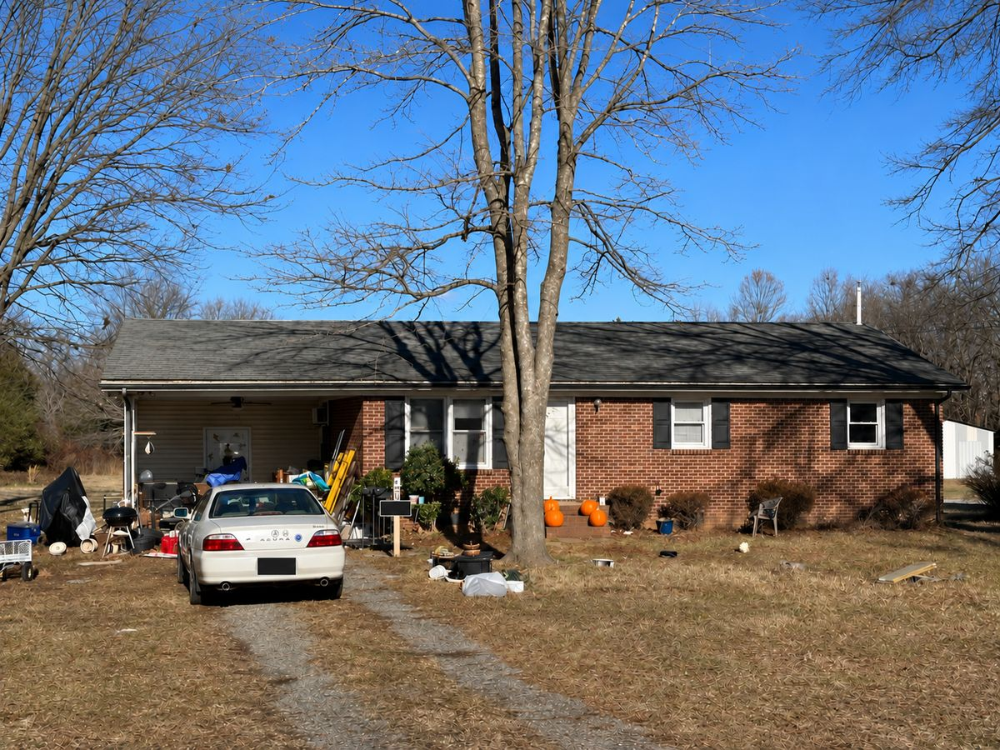

Davidson County NC home buyers
Sell a Davidson County house as-is without fixing everything first.
America Home Buyers reviews houses across Davidson County in their current condition. If repairs, belongings, tenants, vacancy, or an inherited property are making the next step difficult, you can compare a direct offer with listing before spending money.
One county, different property situations
A Lexington house, a Thomasville rental, and a rural property may need different plans.
The right selling path depends on the property, not just the ZIP code. Condition, access, title, occupancy, cleanout, repair scope, and the seller's timeline can all affect what makes sense.
- Older houses with deferred maintenance or major repairs.
- Inherited homes with furniture, tools, or personal belongings still inside.
- Rental properties with tenants or turnover work.
- Vacant houses, outbuildings, acreage, or cleanup needs.
You do not need contractor estimates or a finished cleanout before starting the conversation. Tell us what you know, and we can explain what information matters next.

Compare both routes
A direct sale is a tradeoff, not a shortcut around the facts.
A prepared traditional listing may bring a higher sale price. A direct as-is offer can reduce repair work, cleanout, showings, inspection negotiations, and buyer financing uncertainty. Compare the likely net result and the work required for each path.
We review properties in Lexington, Thomasville, Welcome, Wallburg, and nearby Davidson County communities.
Lexington · Thomasville · Welcome · Wallburg
Clear next steps
What happens after you send the address?
- We ask about the property, condition, occupancy, and your preferred timing.
- We review the house and the repair, cleanout, holding, and resale risk.
- You receive an offer to compare with listing, keeping the property, or waiting.
Requesting a review does not require you to sell. Any sale depends on mutually accepted written terms and the normal North Carolina closing process.

Request a Davidson County property review.
Start with your phone number, the property address, and a short explanation of what is making the sale difficult.
Can I sell a Davidson County house as-is?
Yes. We review houses in their current condition, including properties needing repairs, cleanout, or help sorting through an inherited or rental situation.
Do I need to clean out the property first?
Not necessarily. Explain what remains in the house, garage, yard, or outbuildings so it can be considered during the review.
Should I compare a direct offer with listing?
Yes. Compare likely net proceeds, repairs, cleanout, time, showings, fees, and certainty before deciding.
County-wide service still requires a parcel-specific review
A Davidson County property review starts with the location and parcels being sold, then the house condition, occupancy and access. Tell us whether the property is in Lexington, Thomasville, Welcome, Wallburg or another nearby community so the conversation stays specific to your property.
For rural land or a property not recognized by address lookup, enter a road or parcel description plus the nearest town and state. Explain access, outbuildings and cleanup needs instead of waiting until you have a perfect mailing address.
Explore inherited property, houses needing repairs, tenant-occupied homes or liens and back taxes. Request a property review.